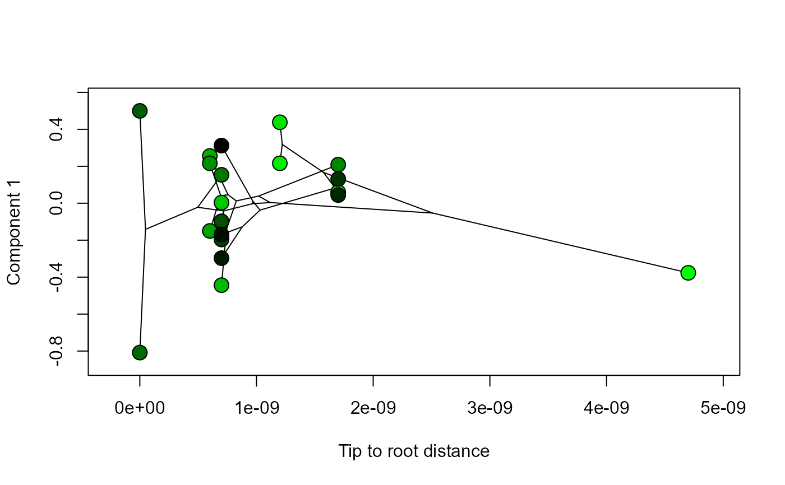

phylomsPlot.RdA plot to visualise the evolutionary relationships between specimens that are represented by values projected into a morphospace (e.g. Sidlauskas, 2008). Here the projected values are from a single component from an analysis of multiple data blocks. Rather than generating a two- or three-dimensional morphospace, this function plots consensus or principal component values against tree distance to show changes in the component value across the evolutionary history of the clade. The component values that are visualised using this function will either be from 1) the consensus space of an analysis performed with regularised consensus principal component analysis, or 2) will be from an analysis of a superblock (i.e. column-wise concatenation of individual data blocks) if principal component analysis was performed instead.
phylomsPlot( result, phy, n.names, comp = 1, pcol = NULL, xlab = "Time (Ma)", label = "off", fsize = 0.8 )
| result | result produced by the |
|---|---|
| phy | a phylogenetic tree (class “phylo”) with |
| n.names | a vector of character strings where entries in the vector represent names of the |
| comp | the component selected to be shown in the phylomorphospace plot. Default is component one. The selected component must be within the range of components calculated by |
| pcol | optional colour value (integer, hex code, colour name) or vector of colour values to be applied to the points in the phylomorphospace plot. If no value is specified then points will be coloured in a gradient from black to green according to their sequence in the data blocks. If a single integer is supplied (e.g. |
| xlab | character string displayed along the horizontal axis of the phlyomorphospace plot. Default is "Time (Ma)". |
| label | a logical value indicating if the points in the phylomorphospace should be labelled using |
| fsize | size of the |
phylomsPlot helps to visualise the result from the analyseBlocks function by presenting an evolutionary context for score values from a consensus space (for option = "rcpca" in analyseBlocks) or from a concatenated superblock (for option = "pca" in analyseBlocks).
phylomsPlot is a wrapper for phylomorphospace from the phytools package (Revell, 2012), which is in turn based on the projection of a phylogenetic tree into a morphospace by Sidlauskas (2008). The function phylomsPlot uses the distRoot function from the adephylo package (Jombart et al. 2010). phylomsPlot does not specifically use functions from the ape package (Paradis et al. 2004), but this package may be called to read phy into R.
Jombart T, Balloux F, Dray S. 2010. adephylo: new tools for investigating the phylogenetic signal in biological traits. Bioinformatics 26: 1907–1909 https://doi.org/10.1093/bioinformatics/btq292
Paradis E, Claude J, Strimmer K. 2004. APE: Analyses of phylogenetics and evolution in R language. Bioinformatics 20: 289–290 https://doi.org/10.1093/bioinformatics/btg412
Revell LJ. 2012. phytools: An R package for phylogenetic comparative biology (and other things). Methods in Ecology and Evolution 3: 217–223 https://doi.org/10.1111/j.2041-210X.2011.00169.x
Sidlauskas B. 2008. Continuous and arrested morphological diversification in sister clades of characiform fishes: a phylomorphospace approach. Evolution 62: 3135–3156 https://doi.org/10.1111/j.1558-5646.2008.00519.x
#>#>phy <- pbtree(b = 0.1, n = 20) # Simulate, combine and analyse two data blocks with 20 samples each block1 <- dodecBlock(n = 20) block2 <- dodecBlock(n = 20) blocklist <- combineBlocks(blocks = c(block1, block2)) result <- analyseBlocks(blocklist) # Simulate a vector of names (here just use the tip labels) n.names <- phy$tip.label # Generate phylomorphospace plot phylomsPlot(result, phy, n.names, comp = 1, xlab = "Tip to root distance")